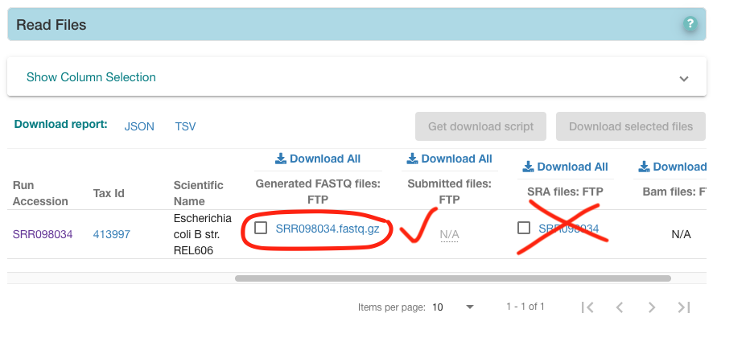
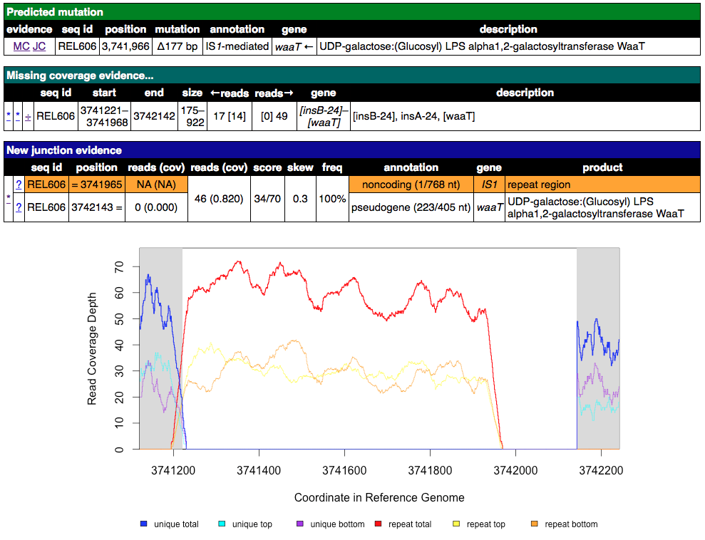
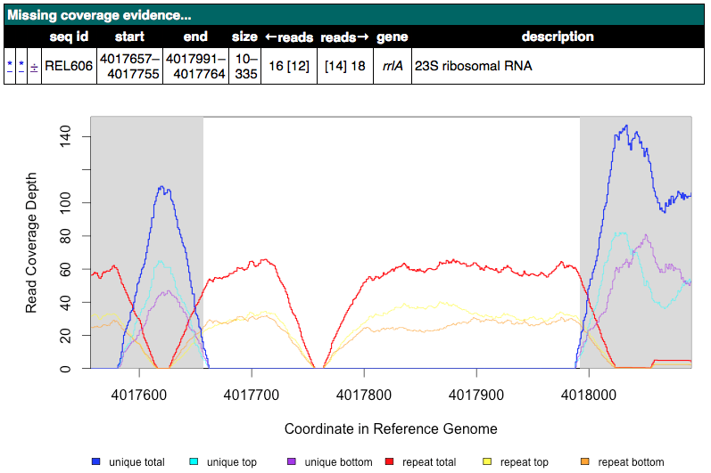
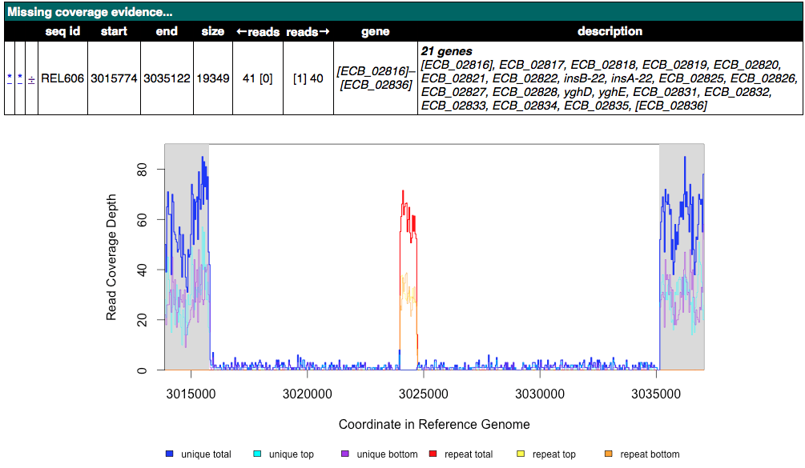
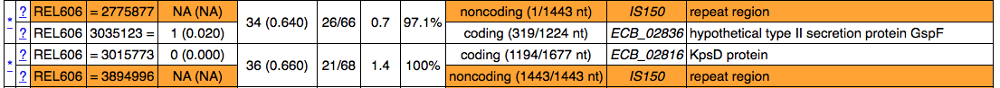
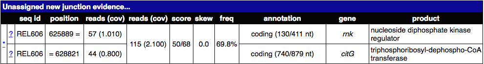
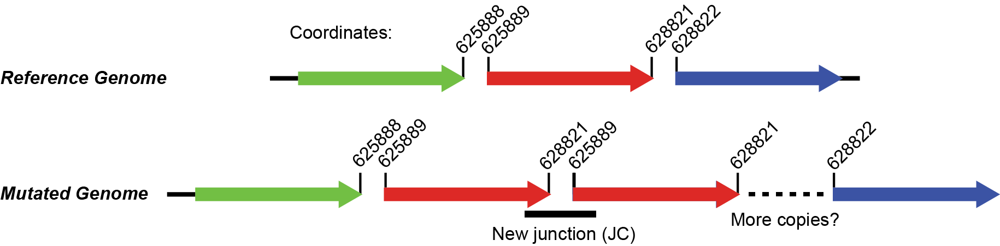
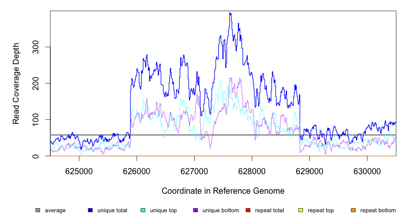
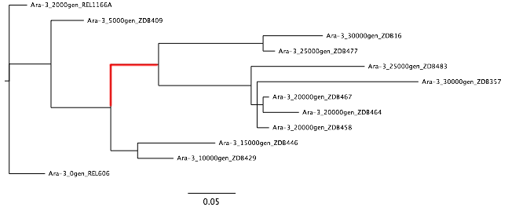

Tutorial: Clonal Samples (Consensus Mode)¶
This tutorial expands on the Test Drive. You will analyze mutations in the genomes of multiple clones isolated from population Ara-3 of the Lenski long-term evolution experiment (LTEE). A complex mutation is present in these samples that was necessary for evolution of the aerobic citrate utilization trait (Cit+). In addition to some tips on breseq usage and examples of interpreting more complex mutations in the output, this tutorial also introduces functionality in the gdtools utility command that can be used to compare and analyze mutations in an entire set of evolved genomes.
Note
This tutorial was originally created for the EMBO Practical Course Measuring intra-species diversity using high-throughput sequencing held 27–31 July 2015 in Oeiras, Portugal.
Warning
If you encounter any breseq or gdtools errors or crashes in running this tutorial, please report issues on GitHub.
1. Download data files¶
First, create a directory called tutorial_clonal and navigate into it:
$ mkdir tutorial_clones
$ cd tutorial_clones
Reference sequence¶
breseq prefers the reference sequence in
Genbank or
GFF3 format. In this example, the reference
sequence is Escherichia coli B strain REL606. The Genbank (Refseq)
accession number is: NC_012967. For this tutorial, we are going to
use an updated version of this file that contains richer gene annotation
information than the version available from NCBI.
Read files¶
In this tutorial, we're going to use Illumina genome re-sequencing data from E. coli strains that evolved for up to 40,000 generations in population Ara-3 from the Lenski long-term evolution experiment [Blount2011]. This data is available in the European Nucleotide Archive (ENA). Go to https://www.ebi.ac.uk/ and search for one of the genomes in the table below (or click on the accession number to be taken directly to the download page for that clone).
| Accession | Clone | Description |
|---|---|---|
| SRR098289 | ZDB564 | Cit+ clone isolated at generation 31,500 |
| SRR098042 | ZDB172 | Cit+ clone isolated at generation 32,000 |
| SRR098040 | ZDB143 | Cit+ clone isolated at generation 32,500 |
| SRR097977 | CZB152 | Cit+ clone isolated at generation 33,000 |
| SRR098026 | CZB154 | Cit+ clone isolated at generation 33,000 |
| SRR098034 | ZDB83 | Cit+ clone isolated at generation 34,000 |
Download the FASTQ files for your chosen sample into your
tutorial_clones directory.
These particular clonal isolates were chosen to illustrate particular aspects of interpreting breseq output. If you would like to investigate data corresponding to any of the 29 sequenced genomes from this population described in [Blount2011] check out SRP004752.
Warning
Be careful to download the reads in FASTQ format (circled link in this image). Do not use SRA format!

2. Run breseq¶
Check to be sure that you have changed into the tutorial_clones
directory, that you have all of the input files, and that you have
decompressed these files.
Now, run breseq using a command of this form (replacing strain numbers and FASTQ file names as appropriate):
$ breseq -l 60 -j 8 -o ZDB83_output -r REL606.gbk SRR098034.fastq
Note
We are using the -l 60 option to limit the amount of read data that
we use to a nominal coverage of 60-fold to speed up this breseq
run. Generally, setting this option to somewhere in the range of 80 to
120 is recommended. In our experience, using more read data than that is
usually not helpful for analyzing clonal samples. It just slows down the
analysis!
What is the -j option doing?
Click on the triangle to reveal the answer
You can show the most commonly used _breseq_ options by calling it with no arguments, and you can show all options by adding the `-h` flag.$ breseq
$ breseq -h
3. Open breseq output¶
Using a web browser, open the file index.html in the output directory.
This file contains tables describing the predicted mutations and also
evidence that may indicate that there are other mutations that
breseq could not resolve into precise genetic changes that you
should further examine. The tables in this HTML file are more fully
described in the output-format section of the breseq manual.
Note
If you run into problems generating the breseq output and would like to continue this tutorial, please download pre-generated results for ZDB83 (created using breseq version 0.26.1).
Now, browse the upper table in the results of Mutation predictions. Click on RA, JC, and MC links to view the evidence breseq used to predict these mutations. There should be a variety of base substitutions, indels, large deletions, and transposon (IS element) insertions in your results.
Consider these questions:
- Click on the MC link on the line for a large deletion that is mediated by an IS element or between IS elements (look in the annotation column). What are the red and blue lines on the coverage graphs?
Click for an example of an IS-mediated MC evidence item

Click to reveal the answers
Blue lines are coverage from uniquely mapped reads. Red lines indicate coverage from reads that map equally well to genomic repeat regions that also exist elsewhere in the genome. You should see red coverage on one or both sides of the deletion that correspond to the IS elements because these transposons occur in mutliple identical copies around the genome. The read length is too short to tell which copy a read came from if it maps to the middle of these elements. They are hich have lengths of around 1000-1500 base pairs).Next, scroll down to the Unnassigned... tables that are near the bottom of the page. Click on a few of these evidence items and examine the read coverage depth or alignment of mapped reads. Can you tell which MC items are associated with JC items and what mutations may have happened in the evolved genome? This can take practice, so we'll work a few examples.
- Find an Unassigned missing coverage evidence entry in an rhs or rrl gene. Examine the read coverage graph. What is the most likely mutation here?
Click for an example rrlA MC image

Click to reveal possible answers
These variants apparently missing small segments of uniquely mapped reads in a mostly repetitive region are most likely explained by non-allelic gene conversions. Recombination converts one copy of the near-repeat to have the exacts sequence of another copy of the near-repeat. Since we are mapping reads to the reference genome, this makes it appear that the sequence here was deleted, when it was just changed to mirror the other copy exactly. If you looked at the coverage of the other copy, then you would likely see correspondingly higher coverage at any unique segments.- Can you find a situation where an observed Unassigned missing coverage evidence item also has junctions to new IS elements on each of its boundaries? What mutation event or events could explain this genetic variant?
Click for an example of an unassigned MC image of this kind

Click to reveal possible answers
In general, if you see sharp drops to zero of blue (unique) coverage on both margins of the deletion, then there will be two junctions to a transposable IS element, one for each side of the deletion. Thus, in the sequenced genome there is one copy of the IS element bridging between the ends of the deleted region. The two mutations that led to this final genome are likely first an insertion of one copy of the IS element, then an insertion of another IS element copy in the same orientation, followed by a deletion between them that also removes one IS copy by homologous recombination between; or, alternatively, an IS mediated deletion adjacent to the new IS copy. By examining other clones in the population, it may sometimes be possible to find out the location of the first IS element insertion if it is ever observed separately before the deletion. In this case, these two JC evidence items in the unassigned table are the ones that correspond to two sides of a transposable element (IS\*150\* copy).
Note
If you'd like to explore the mapped reads in more detail than is
possible by looking at the alignments and coverage graphs that
breseq automatically generates, read the section of the manual on
viewing-in-IGV.
4. Resolving the Cit+ mutation¶
The mutation that caused the Cit+ phenotype encompasses the citT gene (which encodes a citrate:succinate antiporter). It is detected as an unassigned JC evidence item in the breseq results (found in a table lower on the results page). It also leads to a change in coverage in this region of the genome. Your task now is to figure out what mutation or mutations gave rise to the evolved genome architecture.
The steps that can be used to find the answer are illustrated using ZDB83 as an example, but details of the evolved citT arrangement are different in each of the example genomes. Be sure to pay attention to what is actually happening in your results!
A. rnk-citG junction¶
Find the junction annotated as rnk-citG in the Unassigned Junction table. It should look something like this.

What does this junction mean? What regions of the genome are juxtaposed in a way that they were not in the reference genome?
Click to see the answer
The junction means that reads connect position 625889 (extending to higher coordinates) to position 628821 (extending to lower coordinates). Don't get what this means? Click on the \* link and it will show the two snippets of reference genome and how they are joined by split-read alignments across the junction. The image below also shows what the new arrangement would look like. It's evidence for a tandem head-to-tail amplification.
B. Zoomed-in coverage¶
If the region is duplicated (or amplified to even more copies) then
there should also be an increase in the genomic coverage of this region.
Use the breseq BAM2COV subcommand to create a zoomed-in view of this
region to try to better discern its boundaries and copy number.
Alternatively, you can navigate to this region of the genome by loading
the breseq output in IGV (as described above).
You can get the help by running this command:
$ breseq BAM2COV -h
Here's an example of applying BAM2COV to one of these genomes (In
this case, by running it from inside the breseq output directory,
we can use a simpler version of the command that leaves off some options
and has extra information available about the average coverage across
the genome):
$ cd ZDB83_output
$ breseq BAM2COV -a REL606:624500-630500
REL606 with the header of the reference file, if it happens to be different from REL606.
Here's an example of the corresponding output:

C. Add the amplification to the GenomeDiff file¶
files are text files output by breseq that describe all of the
mutations detected in a sample. (They're like "diff" files for code,
describing just the small number of changes needed to "patch" a text
file to create an updated version.) files contain similar information to
VCF files describing genetic variants, but they are more focused on
describing mutational events. They make it possible to (1) easily
annotate structural variants such as transposon insertions and
amplifications, (2) include gene annotation information, and (3) set the
order with which to apply mutations, which is sometimes necessary to
fully describe evolutionary data. The gdtools command exists to
perform various functions on files, as we'll see in the next few
sections (much like the vcftools command) .
Since breseq could not resolve the rnk-citG amplification, this very important mutation is not present in the output file, so it won't be included in downstream analysis steps unless you edit this file and add a description of the event to the output.
To illustrate how to do this, make a copy of the file output/output.gd
from the breseq output directory for your run. Name it something
like ZDB83.gd and keep it outside of the breseq output folder.
If you change your working directory back to tutorial_clones, then a
command like this will manage that:
$ cp ZDB83_output/output/output.gd ZDB83.gd
Open this file in a text editor to see how it represents mutations and
other information that is in the HTML output files in a parsable format.
Refer to genomediff-usage for a full description of the appendix of
the breseq manual for a full description of the file format.
Let's add an AMP line describing the rnk-citG amplification to our
new ZDB83.gd file. You can add this line anywhere in the file.
Try to do this yourself. Here's a hint to get you started
The line should start this way:AMP . . REL606 <insert additional columns here!>
Here's the answer for ZDB83
AMP . . REL606 625889 2933 4
You can run gdtools VALIDATE to check your syntax for errors. For
example, using the command:
gdtools VALIDATE -r REL606.gbk ZDB83.gd
5. Generating a mutated reference sequence¶
If you manually edit files to resolve evidence into new mutations, it's best to check that you've described the mutations correctly in your curated file (with the right start positions, size, variant bases, etc). You can do this by simulating the mutant genome that you have described in the file and then re-querying the sequencing read data against it in a second breseq pass. Ideally, no variants will be detected when you do this if your list of mutations is complete! It's also possible that mapping to this mutated reference genome will enable you to detect new variants – because reads that did not match the original genome sufficiently well now map to the mutated reference sequence.
Use a command like this to generate the mutant genome sequence:
gdtools APPLY -f GFF3 -o ZDB83.gff3 -r REL606.gbk ZDB83.gd
Now start a new breseq run using a command like this:
breseq -j 4 -l 60 -o ZDB83_mutated_output -r ZDB83.gff3 SRR098034.fastq
Wait for this to run and then examine the output (you probably want to continue this tutorial in another window while you wait for that command to complete).
You should see the all of the previously predicted mutations and the rnk-citG junction disappear in the new output! If you make a coverage plot of the citT gene and the surrounding region, the coverage will also now be in red, indicating that reads no longer uniquely map to it because there are now multiple copies.
Note that coordinates of genes are shifted in the mutated reference
genome due to mutations! If you want to find out where the citT gene
copies are located to use gdtools BAM2COV, you can use this command
to show the relevant lines of the GFF3 reference file:
grep citT ZDB83.gff3
6. Characterizing genetic diversity and genome evolution¶
At this point in the tutorial, you can branch off and explore multiple topics related to understanding genome evolution in this E. coli population. Normally, you would generate the "raw" breseq output for all of the genomes in this population and curate these files to resolve unassigned evidence. This can be a very time-consuming process (the breseq runs themselves, but especially getting all of the details correct for resolving the unassigned evidence).
So, to get the most out of this tutorial in the shortest amount of time, please continue by downloading curated GenomeDiff files for the 29 clones from this population described in [Blount2011].
Place this archive inside of your tutorial_clones directory.
Decompress and change into the resulting directory, which is full of the
curated files.
$ tar -xvzf curated_gd.tgz
$ cd curated_gd
Note that these files have been edited in two ways from the raw breseq output. First, unassigned evidence has been resolved into mutations by manually editing the GenomeDiff files. Second, additional metadata has been added in the header sections. This data can be used by the gdtools utilities that will be demonstrated in these examples.
For example, the header of the file Ara-3_34000gen_ZDB83.gd looks like
this:
#=GENOME_DIFF 1.0
#=TIME 34000
#=POPULATION Ara-3
#=TREATMENT LTEE
#=CLONE ZDB83
Example 1. Compare mutations in different genomes¶
You can generate a table that enables you to compare the
presence/absence of the mutations in multiple genomes using the
gdtools COMPARE command. Let's generate a comparison table including
the 4 the genomes from generations 15,000 and earlier. Try to figure out
how to do this from the help:
gdtools COMPARE -h
Here's an example command
$ gdtools COMPARE -o ../compare.html -r ../REL606.gbk Ara-3_2000gen_REL1166A.gd Ara-3_5000gen_ZDB409.gd Ara-3_10000gen_ZDB429.gd Ara-3_15000gen_ZDB446.gd
Answer these questions from the gdtools COMPARE output:
- In what order did mutations in these four genes occur in the population: fis, hslU, mrdB, ybaL?
Show the answer
*mrdB* (2000+ generations) \< *hslU* and *fis* (5000+ generations) \< *ybaL* (10000+ generations)- Do you see any mutations that are off the main line of descent? (That is, they only appear in one or more early clones from a lineage that appears to have later gone extinct, like from 2,000 or 5,000 generations.)
Show me some examples
For example, mutations in the genes *eaeH*, *infB*, and *fadL*.Example 2. Analyze rates and nature of genome evolution¶
You can count the number of mutations in each genome using the gdtools
COUNT command. Try to figure out how to run it from the help:
$ gdtools COUNT -h
Note
Save yourself some typing by putting `ls *.gd` in your command line for the GenomeDiff
arguments! The backticks run the enclosed command and insert the output
into your command line. This requires that you run the command from
inside the curated_gd folder.
Here's an example command
$ gdtools COUNT -o ../count.csv -r ../REL606.gbk `ls *.gd`
Open the comma-separated values (CSV) output file count.csv in a
spreadsheet program or in R.
Answer these questions by loading the gdtools COMPARE output into
R. It's easiest if you change back into your main tutorial_clones
directory first.
> count = read.csv("count.csv", header=T)
> head(count)
- Is the rate at which mutations accumulate in these genomes constant over time in this population? Graph the total number of mutations in each genome (total column) versus the generation when it was isolated (time column).
Show R commands
> plot(total ~ time, count)
Here's the key thing to notice in the graph
Some of the genomes from 36,000+ generations appear to have evolved an elevated mutation rate! They fall way above a line fit to the rest of the points.- There are 52 mutations in ZDB464, a clone isolated at 20,000 generations. If we did a separate evolution experiment under conditions of relaxed selection so that we were observing the spontaneous rate of mutations (i.e., a mutation accumulation experiment) and observed 47 mutations over 50,000 generations of evolution, could we conclude that the rate of genome evolution along the lineages leading to ZDB64 was faster or slower than the spontaneous mutation rate? What is the P-value for rejecting the null hypothesis of the same rate?
Show a hint
This is count data, so you'll want to use a Poisson test. That's the `poisson.test` function in _R_.Show the R commands
> poisson.test( c(52, 47), c(20000, 50000))
Comparison of Poisson rates
data: c(52, 64) time base: c(20000, 50000)
count1 = 52, expected count1 = 33.143, p-value = 0.0001932
alternative hypothesis: true rate ratio is not equal to 1
95 percent confidence interval:
1.381119 2.975263
sample estimates:
rate ratio
2.03125
Example 3. Analyze unique mutations for evidence of bias and selection¶
Often, we only want to examine unique mutations within a population. Many of the mutations observed in the 5,000 generation clone are also found in the 20,000 generation clone, so just adding up the counts of mutations in each genome and then analyzing them for bias or selection would have a problem with pseudoreplication. Said another way, we don't want to count these mutations, which most likely only happened once in the population, as two independent observation supporting a hypothesis. One mutational event should count as one observation, no matter how many genomes it appears in.
To define the set of unique mutations, we can use the gdtools UNION
command:
$ gdtools UNION -h
You'll want to exclude those outlier genomes for this analysis (the ones
which have evolved a high mutation rate). It's probably easiest to move
or delete these three genomes from the curated_gd folder:
Ara-3_36000gen_ZDB96.gd, Ara-3_38000gen_ZDB107.gd, and
Ara-3_40000gen_REL10979.gd.
Show the gdtools command
$ cd curated_gd
$ gdtools UNION -o ../unique.gd `ls *.gd`
This time, run the gdtools COUNT on just the one resulting
unique.gd file. Important: Include the -b option. This
provides additional output of the total number of synonymous and
nonsynonymous mutations possible in the genome.
Show the answer
$ cd ..
$ gdtools COUNT -b -o unique.csv -r REL606.gbk unique.gd
Now, load unique.csv into R to answer these questions:
- Is the spectrum of base substitutions observed (A:T to G:C, A:T to C:G, A:T to T:A, etc.) different from a null hypothesis that these rates are uniform (that all six possible changes are equally likely)?
Show a hint
We need to compare two models, one with the same rate for all six types of base substitutions and one in which there are different rates allowed for each base substitution. This is a hard one. Here are some of the tools you'll need to accomplish this in _R_:> count = read.csv("unique.csv", header=T)
> head(count)
# Define the categories and columns with the numbers that we will be using
> base.substitutions = c("AT.GC", "AT.CG", "AT.TA", "CG.TA", "CG.AT", "CG.GC")
> possible.columns = paste("POSSIBLE.TOTAL", base.substitutions, sep=".")
> total.columns = paste("OBSERVED.TOTAL", base.substitutions, sep=".")
# Create a data frame
> base.sub = data.frame(type = as.factor(base.substitutions), possible = as.numeric(count[possible.columns]), total = as.numeric(count[total.columns]))
# Now we have the data organized like this:
> base.sub
type possible total
1 AT.GC 2279284 14
2 AT.CG 2279284 23
3 AT.TA 2279284 9
4 CG.TA 2350528 37
5 CG.AT 2350528 14
6 CG.GC 2350528 3
# To fit the single rate model (with no intercept), use glm()
> one.rate = glm(total ~ possible + 0, data=base.sub, family=poisson())
Show the rest of the answer
# Fit the six rate model, use glm()
> six.rate = glm(total ~ possible + type + 0, data=base.sub, family=poisson())
# Perform a likelihood ratio test to compare the model fits
> anova(one.rate, six.rate, test="LRT")
Analysis of Deviance Table
Model 1: total ~ possible + 0
Model 2: total ~ possible + type + 0
Resid. Df Resid. Dev Df Deviance Pr(>Chi)
1 5 42.182
2 0 0.000 5 42.182 5.411e-08 ***
---
Signif. codes: 0 ‘***’ 0.001 ‘**’ 0.01 ‘*’ 0.05 ‘.’ 0.1 ‘ ’ 1
Warning
Be careful how you interpret these results! These are the rates at which mutations accumulate in the genomes after they are filtered by selection. They almost certainly do not represent the underlying rates at which new spontaneous mutations appear in the genomes of new cells in the population, which could be higher or lower.
- Is there evidence of positive selection in the base substitutions that are observed in the evolving population (dN/dS > 1)?
Show a hint
The observed dN/dS ratio can be calculated as:> count = read.csv("unique.csv", header=T)
> dN = count$OBSERVED.NONSYNONYMOUS.TOTAL
> dS = count$OBSERVED.SYNONYMOUS.TOTAL
> dN/dS
[1] 4.133333
Show the next hint
Here's one way to calculate the expectation for dN/dS:> base.substitutions = c("AT.GC", "AT.CG", "AT.TA", "CG.TA", "CG.AT", "CG.GC")
# This is a 2:1 transition to transversion ratio
# because there are two transversion categories for each transition
> rate.spectrum = c(4,1,1,4,1,1)
> possible.dN.columns = paste("POSSIBLE.NONSYNONYMOUS", base.substitutions, sep=".")
> possible.dS.columns = paste("POSSIBLE.SYNONYMOUS", base.substitutions, sep=".")
> dN.expect = sum(count[possible.dN.columns] * rate.spectrum)
> dS.expect = sum(count[possible.dS.columns] * rate.spectrum)
> dN.expect/dS.expect
[1] 2.320187
Show the answer
> binom.test(c(dN, dS), p = dN.expect/(dN.expect + dS.expect))
Exact binomial test
data: c(dN, dS)
number of successes = 62, number of trials = 77, p-value = 0.04629
alternative hypothesis: true probability of success is not equal to 0.6988121
95 percent confidence interval:
0.6991329 0.8866683
sample estimates:
probability of success
0.8051948
> base.substitutions = c("AT.GC", "AT.CG", "AT.TA", "CG.TA", "CG.AT", "CG.GC")
> possible.dN.columns = paste("POSSIBLE.NONSYNONYMOUS", base.substitutions, sep=".")
> possible.dS.columns = paste("POSSIBLE.SYNONYMOUS", base.substitutions, sep=".")
> observed.dN.columns = paste("OBSERVED.NONSYNONYMOUS", base.substitutions, sep=".")
> observed.dS.columns = paste("OBSERVED.SYNONYMOUS", base.substitutions, sep=".")
> total.dN.dS = count[observed.dN.columns] + count[observed.dS.columns]
> total.dN.dS
OBSERVED.NONSYNONYMOUS.AT.GC OBSERVED.NONSYNONYMOUS.AT.CG
1 10 19
OBSERVED.NONSYNONYMOUS.AT.TA OBSERVED.NONSYNONYMOUS.CG.TA
1 7 27
OBSERVED.NONSYNONYMOUS.CG.AT OBSERVED.NONSYNONYMOUS.CG.GC
1 11 3
> dN.expect = sum(count[possible.dN.columns] * total.dN.dS)
> dS.expect = sum(count[possible.dS.columns] * total.dN.dS)
> dN.expect/dS.expect
[1] 2.676483
> binom.test(c(dN, dS), p = dN.expect/(dN.expect + dS.expect))
Exact binomial test
data: c(dN, dS)
number of successes = 62, number of trials = 77, p-value = 0.1581
alternative hypothesis: true probability of success is not equal to 0.7280009
95 percent confidence interval:
0.6991329 0.8866683
sample estimates:
probability of success
0.8051948
Example 4. Build a phylogenetic tree of population Ara-3¶
You can use gdtools COMPARE and the Phylip
package program
dnapars to create a maximum parsimony phylogenetic tree files.
At first, let's just use a subset of the genomes through 30,000
generations. Move the others out of the curated_gd folder. We'll keep
the ancestral genome with no mutations (REL606) to use as the outgroup
in rooting this tree.
See if you can figure out how to make a Phylip format output file from
gdtools COMPARE:
gdtools COMPARE -h
Show example code
$ cd curated_gd
$ gdtools COMPARE -f phylip -o ../infile -r ../REL606.gbk `ls *.gd`
Examine the output file from gdtools COMPARE in a text editor. It
consists of phylip input shown as nucleotides with a column for
every unique mutation observed in the population. For SNPs, the actual
nucleotides in the respective genome are shown in the column. For other
mutations, an 'A' is used for the ancestral state, and a 'T' is used for
the derived state (e.g., with IS element inserted). You may also notice
'N' states, which can occur when a region with a mutation in one genome
was deleted in another genome, making the the state of that allele
ambiguous. This 'N' state can also occur when there were not enough
reads in a sequencing sample to call mutations in this region.
This file is suitable for use as an infile to the phylip dnapars
command. You can run dnapars at the command-line using a locally
installed version of phylip or run it on the web via Mobyle
@Pasteur.
Use the default dnapars program parameters.
Now you can visualize the outree file (which is in Newick
format) via many different
tools. Here are a couple that enable online viewing within a web
browser:
You'll notice that the names in your tree are the file names truncated to 10 characters (a limitation of the file format Phylip uses). This isn't terribly useful for the way we have named the files. Here's a version with the full names substituted back in: download Ara-3.tre

As a further exercise, you can try constructing a tree using all of the genomes from this population.
Note
If you have phylip installed at the command line, you can also
experiment with using gdtools PHYLOGENY to directly create a tree
with the full names of each sample included.
What if we wanted to find the mutations that happened on a particular branch in the phylogenetic tree? We might want to know candidate mutations that could be responsible for a change in the phenotype, for example.
To do this, we can use our phylogenetic tree as a guide for gdtools set operations. For example, let's find out what mutations occurred on the branch highlighted in the figure above in red.
Use these commands:
$ gdtools SUBTRACT -h
$ gdtools INTERSECT -h
Here's an example of how
$ cd curated_gd
$ gdtools INTERSECT -o ../intersection.gd Ara-3_30000gen_ZDB16.gd Ara-3_30000gen_ZDB357.gd
$ gdtools SUBTRACT -o ../branch.gd ../intersection.gd Ara-3_10000gen_ZDB429.gd
$ cd ..
$ gdtools COMPARE -r REL606.gbk -o branch.html branch.gd